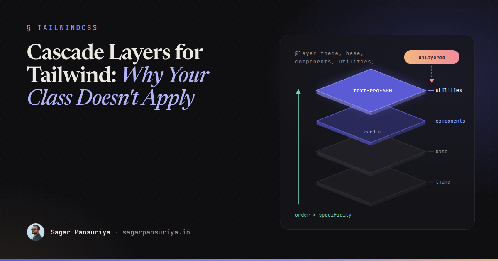
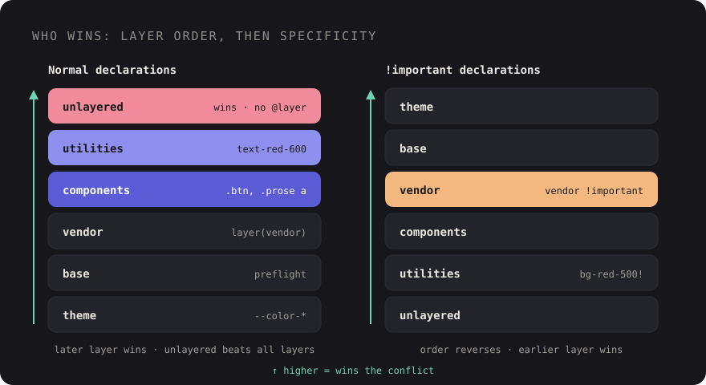

CSS Cascade Layers for Tailwind Users: Why Your Class Doesn't Apply


Picture this. You add text-red-600 to a link, refresh, and the link is still blue. You check
the class name. You check that Tailwind generated it. You open DevTools and there it is, crossed out,
beaten by a selector like .entry-content a that looks far less specific than you'd expect to
win. So you reach for !important, and the problem moves somewhere else.
Almost every "why doesn't my class apply" bug I see in Tailwind v4 projects comes down to one thing:
cascade layers. Tailwind v4 is built on native CSS @layer, and once you
understand how layers change the cascade, those bugs become quick to diagnose and easy to prevent.
Layers in one paragraph
A cascade layer is a named bucket of styles. When two declarations compete for the same property on the same element, the browser first compares which layer they're in. Only if they're in the same layer does it look at specificity, and then source order. Layer order is set by the first time each layer name appears:
@layer reset, components, utilities;
@layer components {
.card a { color: navy; } /* specificity 0,1,1 */
}
@layer utilities {
.text-red { color: crimson; } /* specificity 0,1,0, but wins */
}The link is crimson. utilities comes later in the layer order, so it beats
components no matter how specific the component selector is. That's the whole trick, and it's
why utility classes in Tailwind v4 reliably override component styles without specificity games.
The layers Tailwind v4 creates
When you write @import "tailwindcss";, Tailwind expands it into a layer order declaration and
three imports. Simplified, it looks like this:
@layer theme, base, components, utilities;
@import "tailwindcss/theme.css" layer(theme);
@import "tailwindcss/preflight.css" layer(base);
@import "tailwindcss/utilities.css" layer(utilities);theme: your design tokens as CSS custom properties (--color-*,--spacing, and so on).base: Preflight, Tailwind's reset, plus any element defaults you add.components: empty by default. It's there for your own class-based components.utilities: every utility class Tailwind generates from your templates, plus custom utilities you define with@utility.
Because utilities is last, a utility always beats a component class, and a component class
always beats a base style. That ordering is exactly what you want in a utility-first codebase.

The rule that causes most bugs: unlayered styles win
Here's the part that surprises people. Styles that aren't in any layer beat all layered styles for normal declarations. The browser treats unlayered CSS as if it sits in one final, implicit layer on top of everything else.
So this innocent-looking stylesheet breaks your utilities:
@import "tailwindcss";
/* No @layer: this is unlayered */
.prose a {
color: var(--color-indigo-700);
}Now <a class="text-red-600"> inside .prose stays indigo. It has nothing to
do with specificity. The unlayered rule wins because it's unlayered. Move it into a layer and the utility
wins again:
@layer components {
.prose a {
color: var(--color-indigo-700);
}
}The same thing happens with CSS you didn't write. A date picker stylesheet imported from JavaScript, a
WordPress plugin enqueuing its own CSS, the block editor's default styles, a legacy
style.css still linked in the layout. None of it is layered, so all of it outranks your
utilities for the properties it touches.
Where your own CSS should go
A simple placement guide for a Tailwind v4 stylesheet:
| What it is | Where it goes |
|---|---|
| Design tokens | @theme { … } |
| Element defaults (headings, links, body text) | @layer base { … } |
Reusable class components (.btn, .card, CMS content) | @layer components { … } |
| Single-purpose helpers you want to use like utilities | @utility name { … } |
| Third-party CSS | A dedicated layer, see below |
| Unlayered | Almost nothing |
A nice side effect of @utility is that Tailwind treats those classes like its own, so they work
with variants such as hover: and md: and get sorted alongside built-in
utilities.
@import "tailwindcss";
@layer base {
h1, h2, h3 { text-wrap: balance; }
}
@layer components {
.btn {
padding: --spacing(2.5) --spacing(4);
border-radius: var(--radius-lg);
font-weight: 600;
}
}
@utility scrollbar-hidden {
scrollbar-width: none;
}Now <button class="btn rounded-none"> does what it says: the utility overrides the
component radius because it lives in a later layer.
Putting third-party CSS in its place
The cleanest fix for vendor styles is to import them into their own layer. The layer() function
on @import wraps the whole file in a layer without you touching it. Declare the full order
first so the vendor layer sits where you want it:
/* resources/css/app.css */
@layer theme, base, vendor, components, utilities;
@import "tailwindcss";
@import "flatpickr/dist/flatpickr.css" layer(vendor);Here the vendor layer sits above Preflight, so its own styling still works, but below your components and
utilities, so a rounded-xl or a .btn override on a vendor element applies without
a fight. Because the first @layer statement fixes the order, the declaration Tailwind adds
later doesn't change it.
If a library injects its CSS at runtime through a <style> tag, you can't wrap it this
way. Check whether the library can skip injecting styles, then import its stylesheet yourself into the
vendor layer. For WordPress plugins that enqueue their own files, the usual options are dequeueing the
stylesheet and importing a copy into your layer, or accepting that it's unlayered and writing your
overrides against it deliberately.
How !important behaves inside layers
This is the counter-intuitive bit. For !important declarations, the layer order is
reversed:
- An important declaration in an earlier layer beats an important declaration in a later layer.
- Important declarations in any layer beat important declarations that are unlayered.
The reasoning is that lower layers, like resets and base styles, use !important to say
"this must never be overridden", and later layers shouldn't be able to undo that casually. In practice it
means an !important buried in a vendor layer can beat your important utility. If you find
yourself stacking !important on both sides, stop and fix the layering instead.
Tailwind still gives you an escape hatch for one-off cases: add ! to the end of a class, like
bg-red-500!, to make that utility important. Use it for fighting markup you don't control, not
as a habit. If you need every utility to be important (say, a widget embedded into a hostile page), you
can write @import "tailwindcss" important;, but that's a sign the integration needs a
different boundary.
Debugging "why doesn't my class apply"
When a utility doesn't apply, work through this in order:
- Is the class generated? Search the built CSS or check the Styles pane. If it's missing, it's a content detection problem, often a class name built by string concatenation.
- Is it crossed out? In Chrome and Firefox DevTools, rules in the Styles pane are
labelled with their
@layer. Look at the winning rule's layer, not its selector. - Is the winner unlayered? If the winning rule has no layer label, that's your bug.
Move it into
componentsorbase, or put the source into the vendor layer. - Is the winner in a later layer? Something was declared after
utilitiesin your order. Check for a stray@layerstatement early in the file. - Is there an
!importantinvolved? Remember the reversal: earlier layers win for important declarations. - Is it an inline style? A
styleattribute beats layered and unlayered stylesheet rules alike. JavaScript libraries that animate elements often set these.
One more tool worth knowing: the revert-layer keyword rolls a property back to whatever the
previous layer would have set. It's handy when a component needs to opt out of one base style without
hard-coding a value.
A few habits that keep layers boring
If you've worked through a token-based Tailwind v4 setup, layers are the other half of keeping a stylesheet predictable. The habits I'd put in a project's frontend guidelines:
- Declare the full layer order once, at the top of the main stylesheet.
- Treat unlayered CSS as a code review flag. It should be rare and have a comment explaining why.
- Import every third-party stylesheet with
layer(vendor). - Keep CMS content styles (the WordPress
.entry-contentkind) incomponents, so editors get sensible defaults and developers can still override them with utilities. - Ban
!importantin your own CSS except inside the vendor-override case, and prefer the trailing!modifier in markup so it's visible where it's used.
The short version
- Layer order beats specificity. Later layers win for normal declarations.
- Tailwind v4 uses
theme,base,components,utilities, in that order. - Unlayered styles beat every layer. That's the number one cause of ignored utilities.
- Put vendor CSS in its own layer with
@import … layer(vendor), declared beforecomponents. !importantreverses the order: earlier layers win.- When debugging, look at the winning rule's layer before you look at its selector.
Once your team gets this, the specificity arms race mostly disappears. You stop writing
.page .sidebar .card a to win an argument, because the argument is settled by which bucket the
rule lives in.
Discussion